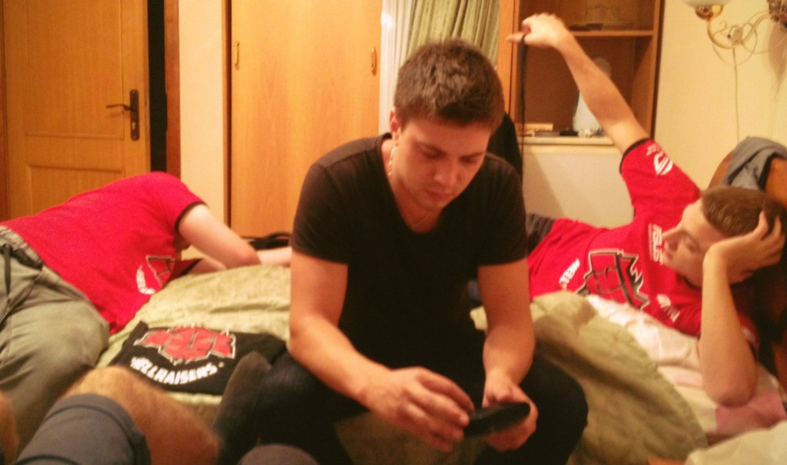
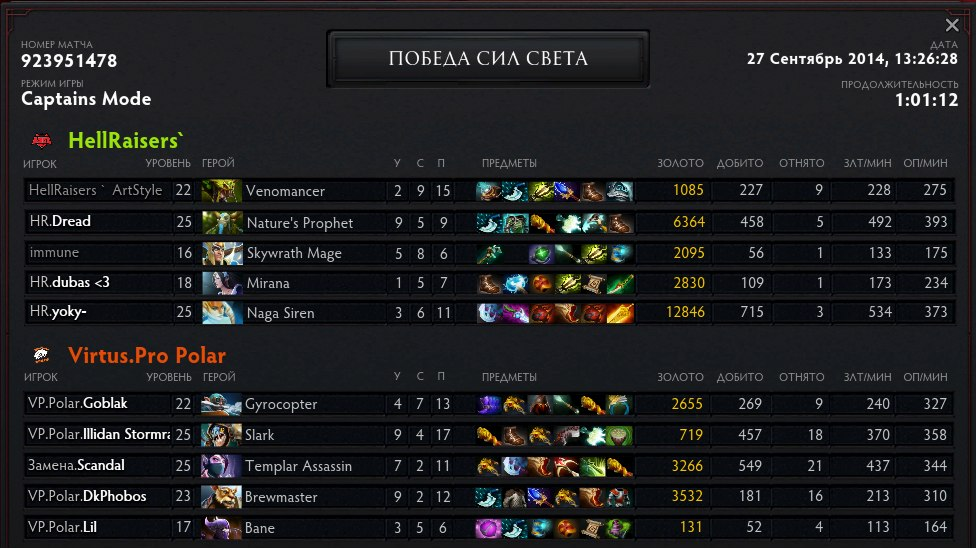
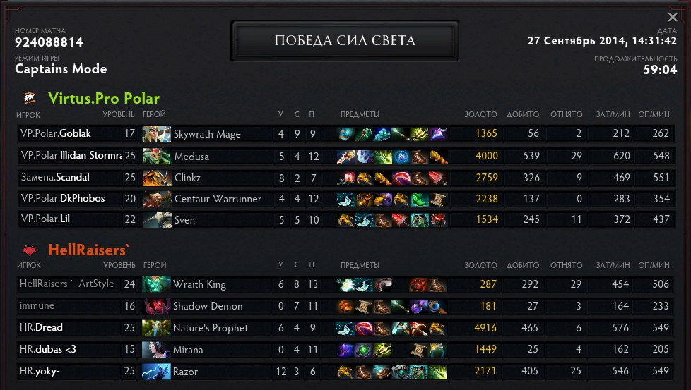
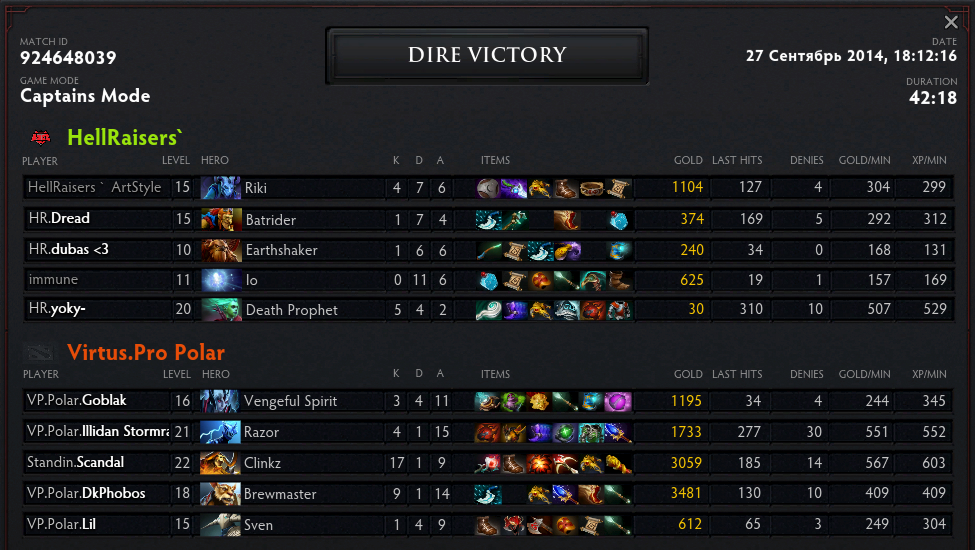
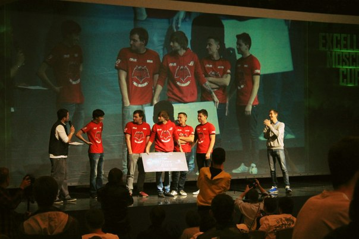
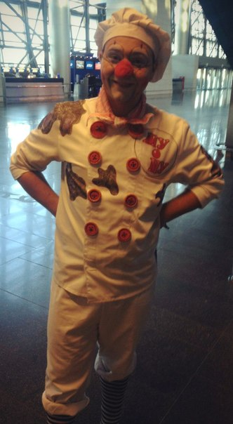

Именно поэтому мне периодически удается «примазываться» к поездкам команд по CS:GO и Dota 2, во время которых я успеваю что-то увидеть и о чём-то рассказать любознательному читателю.
Утро четверга было предельно чётко распланировано – ввиду резкого похолодания в Киеве, я собирался отсидеться в квартире и отразить первые наскоки простуды. Но карты смешал Ваня АртСтайл. Наглец до того заматерел, что решился разбудить вашего покорного слугу в полдень. Дерзость, конечно, неслыханная, но помиловать зарвавшегося юнца было за что – разведка донесла, что до старта наших первых игр на Excellent Moscow Cup осталось меньше 24 часов, а готовность наша стремилась к нулю – билеты не куплены, кони не кормлены, анонсы не написаны. Однако партия сказала «Есть контакт!» – стало быть, нужно есть контакт.
Первым делом огорошили волнительной новостью Иммуна, проживающего в Днепропетровске. Харьковский дуэт в лице АртСтайла и Дубаса взяли коллегу на абордаж – отметая варианты выезда из родного города, Александр леопардовым скоком направился в Харьков, где наша «трипла» и воссоединилась. Да и ехать так веселее, а игроки у нас очень открытые и компанейские. Дред о приятном известии узнал лишь ближе к вечеру, но эмоцию из себя не выдавил. Лишь величаво поинтересовался о соперниках и спокойно отправился «завтракать». Что сказать, лев – царь зверей. Работяга Йоку и вовсе виду не подал. Робко надеюсь, он хотя бы в курсе, что турнир стартует сегодня.
Мы уже в Москве, ознакомились с местом проведения, забросили вещи в гостиницу (о ней можно сложить отдельный эпос), пообщались с болельщиками и морально приготовились к играм.
Update #1 (27 сентября, 00:25) – игра, которая не состоялась
Никогда бы не подумал, что чахлый гостиничный вай-фай, раздающийся из прилепленного скотчем к стене роутера, я буду встречать как величайший дар современности. Обновить блог из турнирной зоны сегодня было практически невозможно — каждое благополучно отосланное сообщение воспринималось как оглушительный успех.
Как вы понимаете, первый игровой день Moscow Excellent Cup прошел явно не по сценарию организаторов – вместо эффектной зарубы на «свежем патче» он превратился в многочасовое ожидание с гаснущими глазами игроков, а рёв толпы сменился её закономерным зёвом.
Кто-то знал, а кто-то уже догадался – и на этот раз всё дело в вездесущих DDoS-атаках, забивающих интернет-канал неугодной «жертвы» сумасшедшим потоком запросов. Именно этот сетевой шабаш кичащихся своей безнаказанностью анонимов сорвал старт турнира.
Команда HellRaisers, бодро открыв счет фрагам в матче с Na`Vi, лишь спустя 6 часов смогла продвинуться к 15-й минуте этой самой игры. Прозябание в игровом лобби закончилось совместным решением команд и организаторов – перенос матча на утро. Будет это загрузка с 15-й минуты, с 1-й, или же полная переигровка – не суть. Главное, чтобы поединок состоялся при «любой погоде».
Недолго думая, мы собрали игровые девайсы, вышли на улицу, силой воли призвали к отелю пиццевоз и заняли места в апартаментах. Выдохнуть после такого сумбурного дня было просто необходимо. Да и поговорить было о чем, несмотря на нескрываемую усталость:

К тому же именно в этот день родился Саша «Immune» Киченок – наш позитивный и заряжающий энергией stand-in. Ритуал обязывал выпить хотя бы рюмку алкоголя, но парни были настолько вымотаны, что ограничились имевшимся в номере – осушили бокалы со сладкой газировкой и холодным заморским чаем (автор всячески пытался уйти от прямой рекламы Coca-Cola и Nestea), после чего разбрелись по своим номерам.
Впереди новый игровой день и не факт, что он будет хоть немного легче. Придётся прорываться с боем.
А DDoS-атаки по факту становятся одной из самых актуальных проблем игрового сообщества. Из забавного «а подколю я соседа на пару минут» это переросло в настоящий бич современного компьютерного спорта, когда под ударом находятся и болельщики, и игроки, и сами турниры с солидными призовыми фондами.
Никто не хочет платить за просмотр того, чего просто невозможно увидеть. Немногим больше среди желающих провести 12 часов в томительном ожидании старта своих матчей.
Время, деньги, стабильность, доверие зрителей и спонсоров – это теряем мы. Все «мы», в широком смысле этого слова. А вот что приобретают от данных акций организаторы DDoS-атак, помимо обласкивания своей эго?
Утро субботы началось феерично. Проснулись, приняли душ, подтянулись вместе к Форум Холу, забросили девайсы на сцену, взяли кофе. Дреда по прежнему не было – несмотря на столь ранее время, московские пробки над нашим львом не сжалились. На часах 9:12, к нам подходят представители Na`Vi и сухо, по-деловому информируют – мы будем настаивать на техническом поражении. Смотрите, мол, парни, на часы – ничего личного, только бизнес.
И действительно, 15 минут задержки – это непростительно, почти преступно. Речь, кстати, о той самой карте, которую вчера играли более 7 часов кряду. Но день новый, а правила есть правила. Всё согласно букве закона, вопросов нет. Счет 0:1, с «рожденными побеждать» на второй карте встречаемся уже в Доте. Проиграли по делу – не лучшим образом отыграли командные драки, часто подставлялись под «ганги» крайне агрессивного пика соперника.
Упали в нижнюю сетку, где нас уже поджидал Гоблак со своей бригадой. К сожалению, второй игровой день так же оказался омрачён бесконечными DDoS-атаками и адскими «потерями пакетов». На первой карте лишь из-за одного такого лага пришлось около часа разбираться с игровой «засадой». На 31 минуте VP.Polar пошли в атаку на мидл, где потеряли двух героев и гем. Одновременно с этим действом зависла сеть у всех игроков, со скрипом поставилась пауза. Кто-то умер, кто-то нет.
Вопрос – как поступать? Возвращаться или же загружать самую последнюю игровую запись? Однако ведь «лоад» можно сделать лишь за 10 секунд до этого момента, прошедшего не по сценарию «виртусов». Наверно, из-за недопонимания с судьями, «виртуса» выбор сделали самостоятельно – просто покинули сервер.
Как сказал чуть позже небезызвестный своим судейским прошлым Ash – «за такое обязаны давать техническое поражение». Стоящий рядом XBOCT подтвердил – справедливая кара Эша касалась и его. Но с Virtus.pro.Polar мы общий язык нашли – смоделировали ситуацию и продолжили игру.

Эту карту мы выиграли, а во второй для нас всё закончилось после проигрыша ключевой драки на 60 минуте. В ответ – моментальный контр-пуш по миду и атака на трон. Отбиться от Медузы с рапирой оказалось невозможно.

На решающей карте в «триплу» мы отправили Виспа, Шейкера и АртСтайла на Рикимару в качестве «керри». К сожалению, выбор героев откровенно не «не заехал». Против банды плотных «нюкеров» относительно спокойно мы себя чувствовали лишь первые 10 минут.

Так и закончилось наше выступление на Excellent Moscow Cup. Приглашение было, бесспорно, неожиданным, но никто из нас не скрывал своей досады и разочарования после поражения. Спустя всего пару минут нас пригласили на церемонию награждения, а зал встретил «восставших из ада» теплейшими аплодисментами – это и есть то, что дарит парням энергию и огромную мотивацию. Первые слова благодарности Андрея «Dread» Голубева со сцены были обращены именно вам – фанам и болельщикам, которые создают приятельскую атмосферу и верят команду и организацию. Лично для меня, связь между болельщиками и игроками – не пустой звук, я искренне считаю нас большой и дружной семьей.

Софиты погасли, мы спустились в зал, пообщались с публикой, а матчи продолжились, пусть и с небольшими паузами. В целом, нужно отдать должное организаторам – они прилагали все усилия, чтобы выпутаться из сложившейся ситуации, а игроки и болельщики при этом чувствовали себя комфортно. К сожалению, интернет-зрители по известным причинам эту заботу ощутить не смогли.
Однако турнир до того затянулся, что около часа ночи команды Empire и Na`Vi договорились долгожданный гранд-финал в этот день не играть, а... что бы вы думали? Перенести его в онлайн! И уже в домашних условиях спокойно завершить начатое. Уверен, пункт в правилах с указанием возможности подобного находится недалеко от страницы с описанием наказания за 15-минутное опоздание на матч.
Что же касается нашей команды, то мы разъехались по домам сразу после награждения – АртСтайл, Дубас и Иммун «на скилле и авторитете» умудрились за полчаса с небольшим успеть забежать в отель, пролететь по станциям метрополитена и, немного зевая от скуки, запрыгнуть в поезд.
Я же на следующее утро решил перестраховаться – прибыл в аэропорт Внуково заранее. Откровенно говоря, дал маху. Получилось слишком уж «заранее» – более 6 часов до вылета. Ожидая регистрации на рейс, молча бродил по этажам терминала, а ухо откуда-то издалека периодически резал мерзкий писк. Вскоре, поднимаясь по эскалатору, он стал предельно отчетлив. Нехорошее предчувствие подтвердилось. Будто под музыку из фильма «Терминатор: Судный день» на горизонте замаячило то, от чего здорового человека должна попросту брать оторопь. Впереди стоял он. Клоун.
При их виде всегда испытываю неподдельный, тсзть, когнитивный диссонанс. Вот стоит этот аэропортный весельчак. Красный нос, разноцветная рубашка, штаны-подстрелыши, хриплый голос, а в глазах? А в глазах абсолютная, вселенская, гнетущая грусть, тоска, забвение и тлен. Что в душе у него творится творится даже представить боюсь.

С детства их недолюбливаю. От клоунов веет холодным расчетом и злобным коварством. Пёстные одежды, нелепая походка, наигранные шутки – эти парни явно хотят втереться к тебе в доверие. Не исключено, что после рабочей смены каждый второй из них возвращается домой, запирается в обесточенной квартире и несколько часов молча избивает подушку. А за окном, естественно, мерцающий фонарный столб, дождь и молнии. Граждане, будьте бдительны.
И до новых встреч на hellraisers.pro!
Комментарии (6)